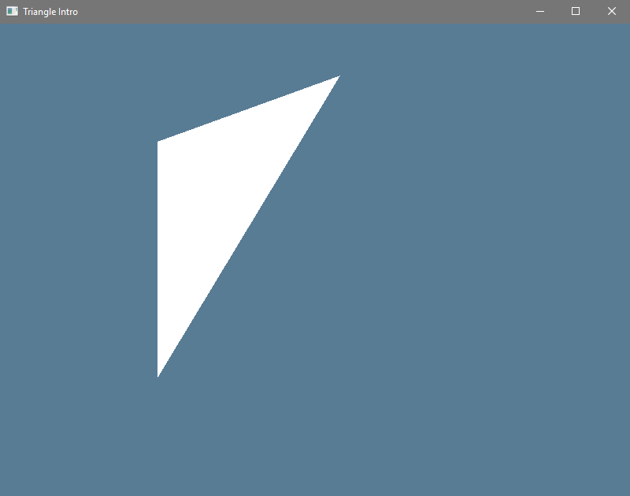

Triangle Intro
Hey, you're back.
This lesson builds upon the last one. Before we could draw a clear frame, now we'll add the ability to draw a frame with a single triangle in it.
Usage Code
Once again, even baby steps in functionality will demand pages and pages of work to get arranged properly.
What we're going to write in this lesson is a single public method so that we
can draw a single triangle as a displayed frame. For now we'll stick to just
one triangle (three points), and even then, only a 2D triangle of (x,y)
points.
# #![allow(unused_variables)] #fn main() { #[derive(Debug, Clone, Copy)] pub struct Triangle { pub points: [[f32; 2]; 3], } impl Triangle { pub fn points_flat(self) -> [f32; 6] { let [[a, b], [c, d], [e, f]] = self.points; [a, b, c, d, e, f] } } #}
Why only 2D? Unfortunately, without the help of camera perspective, lightning,
shading, and other effects like that, 3D things just don't show up very well on
a 2D screen. Instead of looking like a normal triangle at an angle, it just
looks like a slightly differently shaped triangle, but still totally flat. So
when we finally transmit the triangle to the GPU we'll simply give all three
points an identical z coordinate for now.
To have some sort of confirmation of input and output like before we'll have one of the triangle points follow the user's mouse movements. Nothing fancy, just a way to see that we're continually drawing a new thing each time. Actually passing in the triangle to draw is basically identical to the clear color function:
# #![allow(unused_variables)] #fn main() { impl HalState { pub fn draw_triangle_frame(&mut self, triangle: Triangle) -> Result<(), &'static str> { unimplemented!() } } #}
The ability to draw exactly one triangle isn't very useful on its own. What I
mean is that we could potentially use the draw_clear_frame method in the
future even in a "complete program". We could use it during a brief loading
screen or something. However, draw_triangle_frame doesn't really have a good
shelf life. In a complete program we'd want to have a way to specify an entire
scene of models, each composed of many triangles. In fact, if properly
supporting draw_triangle_frame in future lessons gives us any trouble at all,
we'll just delete it instead. It's seriously that impractical.
Why add a thing only to then take it away? Because demanding of ourselves to draw a single triangle, of any quality, forces us to put in to place many more parts of our overall "rendering pipeline". The rendering pipeline is what's really here to stay. A complete rendering pipeline with all the bells and whistles is even more complex than a complete Swapchain like we did last time. It's a many lesson long process to fully understand. In fact, the Swapchain is one portion of the overall rendering pipeline. So we saw a bit of the whole picture in the last lesson, we'll add more this lesson, and we'll keep expanding and refining our process in each future lesson.
The entire field of 3D programming is just an unending process of learning more and more about how you can twist the rendering pipeline to do exactly what you want, when you want, as fast as possible.
If that concept doesn't excite and interest you, best to get out now. No shame in wanting to code other parts of a program instead, but that's really all we'll be doing, so save yourself the time if that's not what you care about.
Terminology Sidebar: Immediate vs Retained
As we go further I should probably define two terms you might see come up here or in other graphics tutorials: Immediate API and Retained API.
- An immediate API is any API where you call a function with an argument and it does all the work with that argument right then, without storing the argument data for later.
- A retained API is any API where your function calls cause data to be retained by the system. Usually you make some calls to set up the situation, and then you make a separate call to compute things using the requested setup.
In general, an immediate API is often easier to use, but a retained API is often more efficient if the input format and usage format differ (so you don't have to convert more than once) or if the system needs special resources (heap allocation, open file handles, things like that).
Quick Bug Fixes
There's two things we have to change about last lesson's code before we proceed to mostly work on new code.
That Swapchain Is Too Big!
On the Metal backend (mac os) the extent that's reported in the swapchain capabilities isn't clamped to the window size, so you get a reported maximum size of 4096 x 4096. Obviously that's far too big! It doesn't matter for just clearing the screen, but it matters now that we'll be drawing something.
We just have to edit how we define the extent as we create our Swapchain:
# #![allow(unused_variables)] #fn main() { let extent = { let window_client_area = window .get_inner_size() .ok_or("Window doesn't exist!")? .to_physical(window.get_hidpi_factor()); Extent2D { width: caps.extents.end.width.min(window_client_area.width as u32), height: caps.extents.end.height.min(window_client_area.height as u32), } }; #}
The Swapchain Doesn't Resize!
The window can resize, but the backing swapchain doesn't resize. Again, this isn't apparent when you're drawing nothing, but once you draw something it'll be drawing at the starting resolution and then scaling up or down to the window's real size.
Now, you could try to carefully destroy anything that came from the Swapchain and then the Swapchain itself and then re-create each element at the new size. You could, it'd work.
Why bother being so fiddly though? We've gone to all the work of making our
HalState type very cleanly close itself down. Let's take advantage of that and
just throw out the entire old HalState and build a new one. We don't have to
think about what the ordering of anything is, we don't have to remember to
update the change_resolution code every time we touch some other part of the
code. It's really so much less error prone. "Just restart the whole thing" is
how you get that magical Nine Nines
Stability, after
all ;3
Note that we need to restart hal if we detect a window size change, but also
if we're using Mailbox mode it's possible for the GPU to try and present a
frame in the moment between when the window resizes and when we detect the error
and respond. To cover this case, we'll also try to restart hal if we get any
rendering error.
# #![allow(unused_variables)] #fn main() { loop { let inputs = UserInput::poll_events_loop(&mut winit_state.events_loop); if inputs.end_requested { break; } if inputs.new_frame_size.is_some() { debug!("Window changed size, restarting HalState..."); drop(hal_state); hal_state = match HalState::new(&winit_state.window) { Ok(state) => state, Err(e) => panic!(e), }; } local_state.update_from_input(inputs); if let Err(e) = do_the_render(&mut hal_state, &local_state) { error!("Rendering Error: {:?}", e); debug!("Auto-restarting HalState..."); drop(hal_state); hal_state = match HalState::new(&winit_state.window) { Ok(state) => state, Err(e) => panic!(e), }; } } #}
Now please be aware that this isn't actually the best design for every
possible gfx-hal program! It's just the best way to do it for our small
program here. The more data that you've uploaded to the GPU that you want to
preserve, the more you might want to consider rebuilding just a small number of
parts. It's something you have to investigate for yourself as your program
grows.
Drawing A Triangle
To draw a triangle, we will use the same sort of setup before, with the frame
based drawing and the "ring buffer" vectors of all our tools. Literally just
copy and paste all of draw_clear_frame to a new spot and name it
draw_triangle_frame, the bulk of it is that similar. The argument is a single
triangle instead of a single color though.
# #![allow(unused_variables)] #fn main() { pub fn draw_triangle_frame(&mut self, triangle: Triangle) -> Result<(), &'static str> { #}
Now you'd think "hey can't we abstract the commonalities here? Well, maybe but
you can't really do it with a function and a closure because lifetimes and
function borders don't play particularly nice in Rust. Our draw code
unfortunately really relies on having a lot of "split borrows" (where the borrow
is just on one field at a time) instead of struct-wide borrows (eg: &self or
&mut self). Or you could do it as a macro maybe? Either way it'd be probably
quite a bit of work for not too much gained. We don't want to over abstract
until we see how the code is growing.
Upload That Triangle Data
To actually place data for the triangle into the vertex buffer we need a mapping
writer. Unfortunately, this is basically a reference, which means that it has
a lifetime linked to a particular blob of Memory from the GPU, which means
that we can't really store it in the same struct that holds the handle to the
Memory because Rust is just bad at self-referential struct things. Instead,
we'll get a mapping writer, use it, and then destroy it.
(Hint: if you already read The Rustonomicon like I told you to in the Introduction, then you already know how to cheese it and avoid this limitation at the small cost of massive unsafety, should you want to. If you need me to tell you how, then you're not ready to do it.)
# #![allow(unused_variables)] #fn main() { // WRITE THE TRIANGLE DATA unsafe { let mut data_target = self .device .acquire_mapping_writer(&self.memory, 0..self.requirements.size) .map_err(|_| "Failed to acquire a memory writer!")?; let points = triangle.points_flat(); data_target[..points.len()].copy_from_slice(&points); self .device .release_mapping_writer(data_target) .map_err(|_| "Couldn't release the mapping writer!")?; } #}
As you'll see in future lessons, it's actually very rare to update all the vertex data of a model every frame. Usually you set it once and then use "transforms" to move the model around within the scene, without actually affecting the vertex data. For now, we'll just push fresh vertex data each frame.
Record The Commands
All that really changes here compared to draw_clear_frame is that instead of
starting a CommandBuffer and then recording nothing, we'll actually record
something this time.
# #![allow(unused_variables)] #fn main() { // RECORD COMMANDS unsafe { let buffer = &mut self.command_buffers[i_usize]; const TRIANGLE_CLEAR: [ClearValue; 1] = [ClearValue::Color(ClearColor::Float([0.1, 0.2, 0.3, 1.0]))]; buffer.begin(false); { let mut encoder = buffer.begin_render_pass_inline( &self.render_pass, &self.framebuffers[i_usize], self.render_area, TRIANGLE_CLEAR.iter(), ); encoder.bind_graphics_pipeline(&self.graphics_pipeline); // Here we must force the Deref impl of ManuallyDrop to play nice. let buffer_ref: &<back::Backend as Backend>::Buffer = &self.buffer; let buffers: ArrayVec<[_; 1]> = [(buffer_ref, 0)].into(); encoder.bind_vertex_buffers(0, buffers); encoder.draw(0..3, 0..1); } buffer.finish(); } #}
This time out the mouse will control one of the triangle points instead of the color, so we'll pick a fixed color for the clear color. Once we start the "render pass inline" we're actually going to bind what we get back from that. It's a RenderPassInlineEncoder, which is also Deref<Target=RenderSubpassCommon>, and it gives us access to the operations of a particular render pass.
- RenderSubpassCommon::bind_graphics_pipeline picks a particular graphics pipeline for the rendering of this subpass. You can have more than one graphics pipeline, each with its own settings, if you want, though while we're starting out we only need one per program.
- RenderSubpassCommon::bind_vertex_buffers
picks the vertex buffers to use for this subpass. The magical looking
0here has to match up with the VertexBufferDesc that's specified as part of the graphics pipeline that you're using. We'll talk about the full graphics pipeline definition in a moment, but the thing to pay attention to right now is that you can have many buffers and you don't need to specify them all in a single bind call. You could give 3 starting at 0, give 3 more starting at 3, etc. We only have one buffer, so we just need one bind call and we place it at the 0th index. - RenderSubpassCommon::draw uses Range properly, so those really are exclusive endings. This uses our three vertices (indexed 0, 1, 2) and a single instance (indexed 0). The instance thing has to do with a more advanced technique called "instanced drawing" where you can draw a particular setup many times as a single draw call, specifying parameters per instance. That'd be for something like drawing ten copies of the same tree model, each in their own position and orientation within the scene. There's a small price per draw call that you make, so if you're drawing "the same" thing many times with small variation it pays off to setup instanced drawing and make a single draw call with many instances specified. We'll cover all that more in a future lesson. For now we've just got a single triangle as part of a single instance.
That's all we gotta do!
"all"
What comes next is setting up the graphical pipeline to make this happen.
Define A Graphics Pipeline
I know that in the last lesson we did all of our setup without any of the code being placed into helper functions, and I stand by that. None of it was super complex (honest!) and most of the sub-parts weren't ever going to be called in different contexts with different inputs. Most of the time you want to make something a function when you're going to reuse it, not just because it's long.
This time I'm going to bend on that, because the graphics pipeline setup is about 2/3rds as long as all of the initialization setup that we did before. It's not even super complex, there's just a billion little settings and options that we have to specify.
create_pipeline Signature
# #![allow(unused_variables)] #fn main() { #[allow(clippy::type_complexity)] fn create_pipeline( device: &mut back::Device, extent: Extent2D, render_pass: &<back::Backend as Backend>::RenderPass, ) -> Result< ( Vec<<back::Backend as Backend>::DescriptorSetLayout>, <back::Backend as Backend>::PipelineLayout, <back::Backend as Backend>::GraphicsPipeline, ), &'static str, > { #}
Okay, ha, so, what have we got here. First, we're telling clippy to please stay
calm despite the very complex return type there. It wants us to make a
Result<Struct, &str>, and I won't say it's wrong, it's just not what I wanna
do with my time right now. We'll just use a 3-tuple.
So what does our pipeline need for us to get our Result? First of all, let's be super clear if it wasn't clear enough already from the tuple: The "pipeline" is actually three different parts, one of which is a thing that's actually called GraphicsPipeline, but also we need to know the PipelineLayout that goes with it, as well as the DescriptorSetLayout. I'd love to link you to some docs for these types, but the specifics of all three are Backend dependent. We just take it on faith that they do something important, without yet knowing what they do precisely.
If we review the
Device trait
we'll see that each of these things comes from a create_foo method on the
Device, so we'll need to add them to the Drop code for HalState. I'll assume
that you can do that yourself by now, you just do the same thing as before. 1)
store it as a ManuallyDrop, 2) use read to pseudo-clone it and then pass that
pseudo-clone to the destroy_foo method.
So we need &mut Device as an input. We also need the Extent2D for what size
of Swapchain this pipeline setup goes with. Finally, we need a &RenderPass.
The sub-passes of the pipeline we make will need to be able to reference back to
it during the setup.
So we want to make a GraphicsPipelineDesc, but as you can see there's 13 fields there, so we'll have to handle a few at a time until everything is ready.
Shader Modules
A Shader is one of several parts of the graphical pipeline on the GPU. There's several stages of shader, as well as some non-shader stages. Right here I'm going to go ahead and use a graphic from the Graphics Pipeline Basics potion of the vulkan-tutorial.com tutorial, because they've got a pretty slick diagram of it.

Things in green are selections we can make, but from only a limited list of options. Things in yellow are things that we can write a shader for.
A shader is a mini-program (sometimes not so mini) that has its own options for
source language, and it's own compiled format, and all of that. Instead of
writing in Rust and compiling to ARM or x86_64 or something else, we write a
program in GLSL and
compile it to SPIRV. Actually you
can write a shader in anything that compiles to compatible SPIRV code, but the
tools that are easiest for us to use right now do GLSL -> SPIRV.
A Shader Module is a handle that you get when you upload some shader code to the GPU. We take a few shader modules and put them together into a GraphicsShaderSet.
# #![allow(unused_variables)] #fn main() { let mut compiler = shaderc::Compiler::new().ok_or("shaderc not found!")?; let vertex_compile_artifact = compiler .compile_into_spirv(VERTEX_SOURCE, shaderc::ShaderKind::Vertex, "vertex.vert", "main", None) .map_err(|_| "Couldn't compile vertex shader!")?; let fragment_compile_artifact = compiler .compile_into_spirv(FRAGMENT_SOURCE, shaderc::ShaderKind::Fragment, "fragment.frag", "main", None) .map_err(|e| { error!("{}", e); "Couldn't compile fragment shader!" })?; let vertex_shader_module = unsafe { device .create_shader_module(vertex_compile_artifact.as_binary_u8()) .map_err(|_| "Couldn't make the vertex module")? }; let fragment_shader_module = unsafe { device .create_shader_module(fragment_compile_artifact.as_binary_u8()) .map_err(|_| "Couldn't make the fragment module")? }; #}
For this to work, you have to use the shaderc-rs crate, which takes very
long to build that first time because it's actually using build.rs to download
a relatively massive C++ lib and then link that in. Be sure to see the shaderc-rs
setup instructions.
- We open a compiler
- We compile some Vertex Shader source. This is "where do the points go on the screen". We use a string literal in our file, the shader type we want, a dummy file name (it's just used for error messages), the "entry point" of the program, and finally we could give some extra options if we wanted.
- Then we do the exact same thing for the Fragment Shader. This is "what color are the points".
To form a GraphicsShaderSet you always need a vertex shader, and then all the other types are optional. However, to form an image you always must include a fragment shader or all the color output is undefined (hard to have an image without any colors). There are things you can do with a GraphicsShaderSet where you don't need a fragment shader because you don't use the color channel output, but those are for some future lesson.
In fact, shaders are complex enough that we'll spend the next lesson on a proper shader introduction, and I'm going to punt all the rest of the description about them until that lesson.
The last thing to say here is that the shader modules need to be destroyed, but
we don't need to store them forever in the HalState. We can destroy them after
we've made our graphics pipeline parts but before create_pipeline returns.
Once they've been incorporated into the pipeline we don't need to hold on to the
individual handles any more.
Make A GraphicsShaderSet
Next, we go into one of those inner scopes that we love to use. Don't you love 'em? I sure do. Scopes for days. In this case, the point here is that we're separating off all the stuff that happens while we've got those shader modules created.
To make a GraphicsShaderSet we need an
EntryPoint
for each shader. It needs the entry (which matches the entry defined in the
compiled SPIRV code), the shader module, and a
Specialization,
which we won't use right now (we'll just give empty slices).
# #![allow(unused_variables)] #fn main() { let (vs_entry, fs_entry) = ( EntryPoint { entry: "main", module: &vertex_shader_module, specialization: Specialization { constants: &[], data: &[], }, }, EntryPoint { entry: "main", module: &fragment_shader_module, specialization: Specialization { constants: &[], data: &[], }, }, ); let shaders = GraphicsShaderSet { vertex: vs_entry, hull: None, domain: None, geometry: None, fragment: Some(fs_entry), }; #}
Input Assembler
Once we've got all of our shader stuff arranged, we need to define all the other
parts. The first thing up (going in order of the pipeline diagram) is the
InputAssemblerDesc,
where we pick a
Primitive for how
our vertices will be treated. The vertices are really just a huge list of values
(usually f32, but even then not always), and you have to tell the system how
it's supposed to turn those values into geometry. You should check the vulkan
docs
on this one, because they really get into it with diagrams and everything, but
here's the short version:
- As you expect, there's triangles, but you can also specify lines and points.
- Geometry can be given as a "list", where each unit is totally unique, or as a "strip" where successive units share some vertex data. This can be trickier to arrange until you get used to it, but it saves on data uploaded and data stored. Even as desktops move to having 8GB or 16GB of RAM, the GPU itself has half (or less!) of that, so making your models "compressed" like this is very nice.
Vertex Shader
I know that we already have a shader module for our vertex shader, but we also need to specify what buffers are going to be serving up vertex data, as well as the attributes for the data. I said that the vertex data is actually just a huge list of values, but those values aren't only positions for each vertex. You most commonly will specify color and/or texture info as well as position information.
Well, you would if you were doing a bigger example than this. To start we're
doing a single monochrome triangle, so we'll just have each vertex specify an
(x,y) position.
# #![allow(unused_variables)] #fn main() { let vertex_buffers: Vec<VertexBufferDesc> = vec![VertexBufferDesc { binding: 0, stride: (size_of::<f32>() * 2) as u32, rate: 0, }]; let attributes: Vec<AttributeDesc> = vec![AttributeDesc { location: 0, binding: 0, element: Element { format: Format::Rg32Float, offset: 0, }, }]; #}
For the VertexBufferDesc we give:
- A
bindingindex: remember that "magical 0" I mentioned we used when we wrote the CommandBuffer? That's this thing. - A
stride: how much space, in bytes, between the start of one vertex data blob and the next - A
rate: which is for that instanced drawing thing that I said we'd do in a future lessons). We need one of these descriptions per vertex buffer.
For the AttributeDesc we give
- A
location: which will match up with locations specified for inputs in our shader code. They're counted up from 0, like array indexes. - A
binding: which matches up with the VertexBufferDesc that this AttributeDesc is for. Each VertexBufferDesc can have its own attribute arrangement if you like, it can get quite intricate. - An
element: This is an Element entry, which gives the Format of the particular attribute, as well as the byte offset for how far into the vertex entry this particular attribute starts. The formats are mostly all specified in terms of what sort of color data format they'd give, so "two f32 values" isRg32Float, even though we won't be using them as red and green channel data. This is one of those things where you just have to accept that bits are bits and the meaning is more what you make of it.
Tessellation Shader
We don't do anything here! Freebie! This would break up geometry into smaller geometry to add apparent details, but we're not gonna right now.
Geometry Shader
We also don't do anything here! Another freebie! This would let us process each geometry item (point/line/triangle) into either 0 outputs (canceling that item), 1 output, or even more than one output (kinda like the tessellation shader).
Rasterization
Once we have all of our geometry arranged, we need to translate the points into pixels on the screen. So we specify a Rasterizer:
polygon_mode: Pick a PolygonMode. Usually you wantFill, thoughLineandPointare neat for "debug display" sorts of things. Or if you want to go for the "Tron" look.cull_face: When you define a triangle, it's obviously got two sides (called "front" and "back"). You can make it so that if a triangle is viewed from the "wrong" side then it's not included in the output.front_face: The "front" of the triangle depends on the order that the vertex data is specified, it can be "clockwise" or "counterclockwise" (that's "widdershins" for all our UK friends). This decision is basically arbitrary, your models can go either way as long as they match what you define here.depth_clamping: If a thing is off the screen in X or Y we're not going to see it, but what about the Z direction? If this is false then things that are "out of bounds" in the Z direction get culled. If this is true then they get their Z position clamped, so they end up included in the output.depth_bias: An optional parameter that's for when you need to draw things very closely to one other in the Z direction. Without this you can get a very bad looking effect called "z-fighting" where two elements become incorrectly mixed together visually (pic). This lets you apply some complicated math to compensate for such a situation. Another one of those "we'll get to it later" things, so we specifyNoneto start.conservative: This is a neat graphics extension that basically lets more fragments be generated per geometry unit, which can lead to a much better result, because the output appears more "smoothly" (see the pics in that article to understand what I'm trying to say). There's probably a reasonable number of GPUs that might be running gfx-hal that wouldn't support this extension though, so we won't request it starting out, because with just one triangle it doesn't make a difference in the scene.
{kind=link}
# #![allow(unused_variables)] #fn main() { let rasterizer = Rasterizer { depth_clamping: false, polygon_mode: PolygonMode::Fill, cull_face: Face::NONE, front_face: FrontFace::Clockwise, depth_bias: None, conservative: false, }; #}
Fragment Shader
So the rasterizer turned all of our geometry elements into pixel locations for us, now the final shader runs. It takes "some data" and picks a color for this "fragment". A fragment is like a part of a pixel. Depending on the full scene, more than one fragment can end up in the same pixel, and then they'll get blended together. You don't know what the pixel will finally be until all of the fragments that touch that pixel are done.
The actual data that the fragment shader gets is mostly whatever the previous stages of the pipeline have output. There's no specific format and there's no "FragmentShaderDesc" type that you set up on the CPU side. It's all defined in your shader files. Any per-fragment values have to come through the previous stages of the pipeline, starting back at the Vertex Shader. There is the ability to have global, read only data (as a Push Constant or Uniform), but any per-fragment data has to come through the whole pipeline process.
A single geometry element can have many fragments. Imagine a triangle that goes from the bottom left, to the top left, to the top right. There's only three vertices, but half the screen is covered in fragments. The pipeline interpolates the values for any fragment that's not directly from a vertex (which is almost every fragment ever, honestly). That might sound kinda spooky, but the weird part is that it works really well even once textures and stuff are involved.
Multisampling
Sometimes you'll get edges in your pictures that look "jagged". The eyes can pick up where a long line is jumping from one pixel to the next if it's almost but not quite vertical or horizontal. Fixing that is called "anti-aliasing", and there's more than one way to do it.
The pipeline in gfx-hal has a parameter for "multisampling", where instead of
computing fragments on a pixel basis, you compute them on a sub-pixel basis and
average the results. You're basically just throwing computational power at the
problem to try and get a more accurate result. Naturally, if you do enable
multisampling, you want to allow for a user to turn such a feature off if they
don't have as good of a graphics card. We won't enable it for now, because
adding it in touches just a little bit of the swapchain, the render pass, the
pipeline, anything that has to do with images. We can do that as lesson of its
own soon.
Depth Testing
This is actually not specifically part of the fragment shader, it's a step after the fragment shader but before the color blending. There's no space for that on our handy diagram, so we'll talk about it right here. Basically, in addition to having colors, an image also has depth values for each pixel (we've touched on this a bit before). After a fragment shader runs and would perform a change there's a depth test, and you can determine what actual change, if any, goes into effect. Or you can enable early fragment test mode if you want, it's one of many operations that can potentially discard a fragment.
As you're probably getting sick of hearing at this point, we're not using depth testing right now.
Note that there's two different structs called DepthStencilDesc in the
gfx-hal crate. The one in the image module is deprecated old nonsense, we
want to be sure to import the one from the pso module.
# #![allow(unused_variables)] #fn main() { let depth_stencil = DepthStencilDesc { depth: DepthTest::Off, depth_bounds: false, stencil: StencilTest::Off, }; #}
Color Blending
The final stage is color blending. Since we're doing 3d graphics, sometimes one thing will need to appear "in front of" another. If it's fully opaque you just draw the closer thing, but sometimes you get fragments that aren't fully opaque, and so you blend the closer and farther thing. We can describe how we want that to happen.
Except we're not doing blending stuff so we're going to totally ignore the "current destination value" and only take the "source value".
# #![allow(unused_variables)] #fn main() { let blender = { let blend_state = BlendState::On { color: BlendOp::Add { src: Factor::One, dst: Factor::Zero, }, alpha: BlendOp::Add { src: Factor::One, dst: Factor::Zero, }, }; BlendDesc { logic_op: Some(LogicOp::Copy), targets: vec![ColorBlendDesc(ColorMask::ALL, blend_state)], } }; #}
More Things To Define
You thought we were done! Ha, if only.
BakedStates
We need to define
viewport: Defines part of the whole viewport process. Right nowgfx-haldoesn't support more than one viewport, but it's on the list of TODOs for 0.2.scissor: Defines the params for the scissor test, which takes in 2d framebuffer coordinates and cancels a fragment if it falls outside the scissor area. This is also going to eventually allow for more than one scissor areas, but it's not there yet.blend_color: This is a static color to blend over the whole image. You probably don't want this most of the time, since it's baked into the whole pipeline. For dynamic color blend effects (eg: flashing the screen red when an attack hits) you'd put that in as part of your fragment shader.depth_bounds: This defines the limits of that depth test thing.
# #![allow(unused_variables)] #fn main() { let baked_states = BakedStates { viewport: Some(Viewport { rect: extent.to_extent().rect(), depth: (0.0..1.0), }), scissor: Some(extent.to_extent().rect()), blend_color: None, depth_bounds: None, }; #}
Non-Buffer Data Sources
Data for the graphics pipeline can come from things other than the vertex buffer. We're not doing that here, but we still have to say that we're not doing it here.
# #![allow(unused_variables)] #fn main() { let bindings = Vec::<DescriptorSetLayoutBinding>::new(); let immutable_samplers = Vec::<<back::Backend as Backend>::Sampler>::new(); let descriptor_set_layouts: Vec<<back::Backend as Backend>::DescriptorSetLayout> = vec![unsafe { device .create_descriptor_set_layout(bindings, immutable_samplers) .map_err(|_| "Couldn't make a DescriptorSetLayout")? }]; let push_constants = Vec::<(ShaderStageFlags, core::ops::Range<u32>)>::new(); let layout = unsafe { device .create_pipeline_layout(&descriptor_set_layouts, push_constants) .map_err(|_| "Couldn't create a pipeline layout")? }; #}
Graphics Pipeline
We can finally, finally make that graphics pipeline. We use all the stuff declared so far, and a few more filler arguments that are unimportant to us right now, to make a GraphicsPipelineDesc. That gets passed to Device::create_graphics_pipeline. We could optionally specify a pipeline cache too, but we don't have such a thing yet.
# #![allow(unused_variables)] #fn main() { let gfx_pipeline = { let desc = GraphicsPipelineDesc { shaders, rasterizer, vertex_buffers, attributes, input_assembler, blender, depth_stencil, multisampling: None, baked_states, layout: &layout, subpass: Subpass { index: 0, main_pass: render_pass, }, flags: PipelineCreationFlags::empty(), parent: BasePipeline::None, }; unsafe { device .create_graphics_pipeline(&desc, None) .map_err(|_| "Couldn't create a graphics pipeline!")? } }; #}
Backing Out Of create_pipeline
Once that's done we go up a level, destroy our shader modules, and then return what we've built to the caller.
Define A Buffer For Vertex Data
So within HalState::new we've made some pipeline bits:
# #![allow(unused_variables)] #fn main() { // Build our pipeline and vertex buffer let (descriptor_set_layouts, pipeline_layout, graphics_pipeline) = Self::create_pipeline(&mut device, extent, &render_pass)?; #}
It said that it's going to use a buffer, but we need to make that buffer separately.
Make A Buffer And Some Memory
First we ask the Device to please make us a Buffer, which is basically just another "handle" thing.
# #![allow(unused_variables)] #fn main() { const F32_XY_TRIANGLE: u64 = (size_of::<f32>() * 2 * 3) as u64; let mut buffer = device .create_buffer(F32_XY_TRIANGLE, BufferUsage::VERTEX) .map_err(|_| "Couldn't create a buffer for the vertices")?; #}
Now that we have a buffer we can ask what the requirements for the buffer are. It might seem strange to make a thing and then ask what the requirements for it are, but that's how you do it.
Using the requirements we can get a "memory type ID", which allows us to allocate some memory to go with this buffer. It's certainly some weird looking code, but just go with it.
# #![allow(unused_variables)] #fn main() { let requirements = device.get_buffer_requirements(&buffer); let memory_type_id = adapter .physical_device .memory_properties() .memory_types .iter() .enumerate() .find(|&(id, memory_type)| { requirements.type_mask & (1 << id) != 0 && memory_type.properties.contains(Properties::CPU_VISIBLE) }) .map(|(id, _)| MemoryTypeId(id)) .ok_or("Couldn't find a memory type to support the vertex buffer!")?; let memory = device .allocate_memory(memory_type_id, requirements.size) .map_err(|_| "Couldn't allocate vertex buffer memory")?; #}
And once that is allocated, we can bind the buffer to the memory that goes with it.
# #![allow(unused_variables)] #fn main() { device .bind_buffer_memory(&memory, 0, &mut buffer) .map_err(|_| "Couldn't bind the buffer memory!")?; #}
Update The HalState Struct
With these new things in hand, we need to add to the struct definition
# #![allow(unused_variables)] #fn main() { pub struct HalState { buffer: ManuallyDrop<<back::Backend as Backend>::Buffer>, memory: ManuallyDrop<<back::Backend as Backend>::Memory>, descriptor_set_layouts: Vec<<back::Backend as Backend>::DescriptorSetLayout>, pipeline_layout: ManuallyDrop<<back::Backend as Backend>::PipelineLayout>, graphics_pipeline: ManuallyDrop<<back::Backend as Backend>::GraphicsPipeline>, requirements: Requirements, current_frame: usize, frames_in_flight: usize, in_flight_fences: Vec<<back::Backend as Backend>::Fence>, render_finished_semaphores: Vec<<back::Backend as Backend>::Semaphore>, image_available_semaphores: Vec<<back::Backend as Backend>::Semaphore>, command_buffers: Vec<CommandBuffer<back::Backend, Graphics, MultiShot, Primary>>, command_pool: ManuallyDrop<CommandPool<back::Backend, Graphics>>, framebuffers: Vec<<back::Backend as Backend>::Framebuffer>, image_views: Vec<(<back::Backend as Backend>::ImageView)>, render_pass: ManuallyDrop<<back::Backend as Backend>::RenderPass>, render_area: Rect, queue_group: QueueGroup<back::Backend, Graphics>, swapchain: ManuallyDrop<<back::Backend as Backend>::Swapchain>, device: ManuallyDrop<back::Device>, _adapter: Adapter<back::Backend>, _surface: <back::Backend as Backend>::Surface, _instance: ManuallyDrop<back::Instance>, } #}
And also make all the appropriate changes to the Drop impl, which you're smart
enough to do yourself at this point.
Rendering A Triangle
Now that HalState supports it, actually rendering a triangle is pretty simple.
We just change our do_the_render function.
# #![allow(unused_variables)] #fn main() { fn do_the_render(hal_state: &mut HalState, local_state: &LocalState) -> Result<(), &'static str> { let x = ((local_state.mouse_x / local_state.frame_width) * 2.0) - 1.0; let y = ((local_state.mouse_y / local_state.frame_height) * 2.0) - 1.0; let triangle = Triangle { points: [[-0.5, 0.5], [-0.5, -0.5], [x as f32, y as f32]], }; hal_state.draw_triangle_frame(triangle) } #}
Those coordinates are given in a 0.0 to 1.0 system, with +X going from left to right, and +Y going from top to bottom. Two points of the triangle are fixed, and the third one follows the mouse around as it moves. Looks like this:

You can find the full code file in the examples/ directory of the repo.